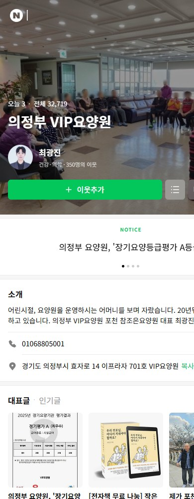

02 / 03
실제 경험
실제로 요양원을
채워본 경험이 있습니다.

의정부 VIP요양원 · 정원 29인
0→29명
연고가 없던 지역에서 시작해
약 11개월 만에 정원을 채웠습니다.
약 11개월 만에 정원을 채웠습니다.
- 2022년 개원, 첫해 운영 적자에서 시작
- 운영과 마케팅을 함께 진행

포천 참조은요양원 · 정원 27인인수 시설
20→27명
운영 중이던 시설을 인수해
입소자를 추가로 채웠습니다.
입소자를 추가로 채웠습니다.
- 2024년 11월 인수, 당시 입소자 20명
- 이후 7명 증가, 정원 27명 충족
공실이 다시 생겼을 때도 · 2026년 3월 의정부 현원 27명(대기 0명) → 4월 정원 29명 다시 충족
운영·시설·상담·마케팅이 함께 만든 결과입니다. 마케팅만의 성과로 말하지 않습니다.
최광진요양원 운영
원장 입장에서 운영 문제를 진단합니다
- 2019년부터 요양사업 운영
- 의정부·포천 요양원, 방문요양 운영
- 입소자 모집과 시설 운영
- 보호자 상담과 입소 연결
김옥현마케팅주의자
보호자가 시설을 찾고 문의하게 만듭니다
- 2022년부터 요양원 마케팅 수행
- 네이버 블로그·플레이스, 검색·광고 운영
- 홈페이지·콘텐츠 제작, 보호자 언어 분석



의정부 VIP요양원 · 포천 참조은요양원 실제 운영 사례마케팅주의자